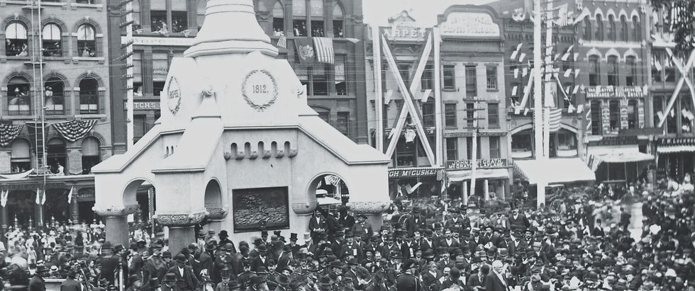
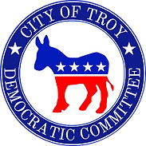

The issues that drive our work and our commitment to Troy residents.
Housing costs in Troy have risen faster than incomes, and the supply of affordable units has not kept pace. We support stronger tenant protections, expanded affordable housing, and accessible pathways to homeownership.
Troy's water infrastructure includes active lead service lines, and combined sewer overflow into the Hudson remains unresolved. We support lead line replacement, green stormwater investment, and environmental accountability in affected communities.
Troy is among the most diverse cities in upstate New York. We support equitable representation in public office and policies that address disparities in outcomes across communities.
We support economic development that creates living-wage employment, sustains small businesses on Troy's commercial corridors, and distributes investment across all neighborhoods.
Decades of deferred investment have left Troy's roads, water mains, and sidewalks below standard in many neighborhoods. We support sustained infrastructure investment directed toward the communities most in need of repair.
Stable housing keeps children in their schools. When families are displaced, students lose their teachers, their classmates, and the consistency that learning requires. We support arts, music, and athletic programs in every building, smaller class sizes, and the housing policies that make it possible for Troy's children to stay where they started.
For more on Democratic priorities, visit the Democratic Party Platform.